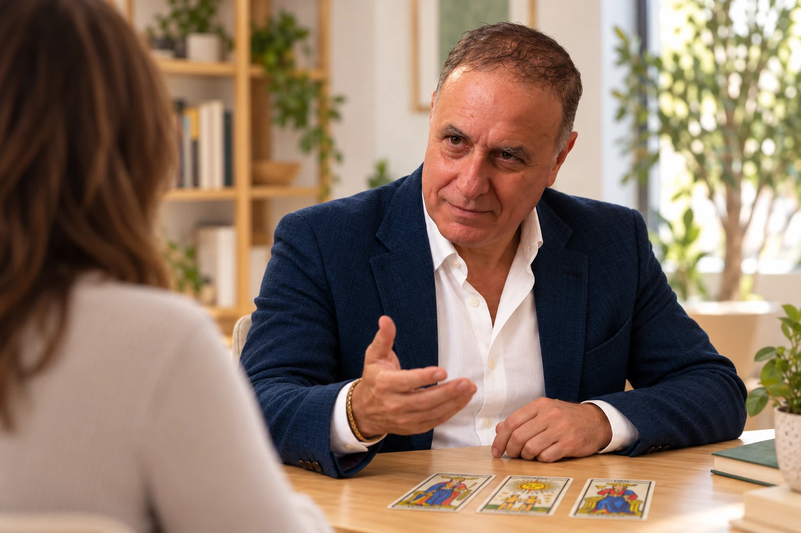
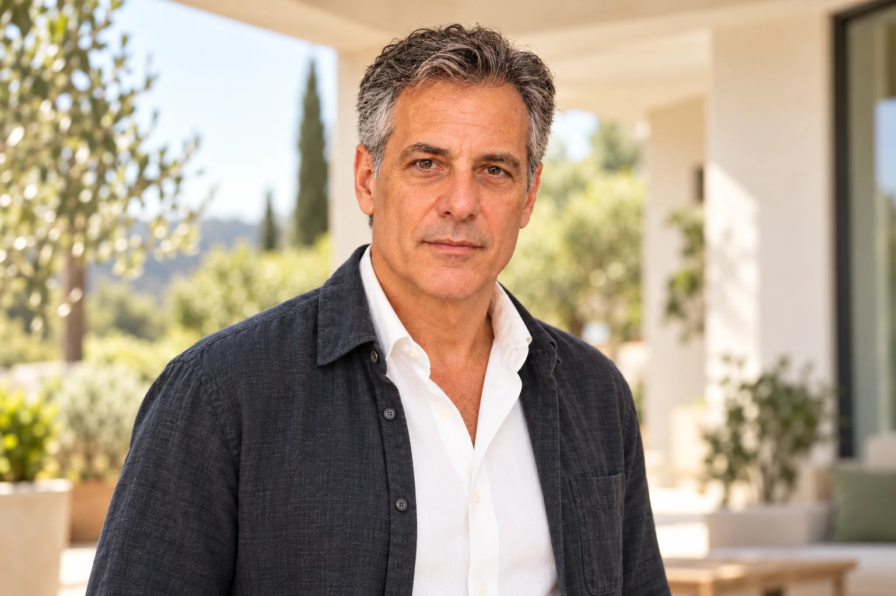

Dare forma a un’idea.
Un’intuizione, un nuovo percorso, qualcosa che vuoi costruire. Uno spazio per mettere a fuoco ciò che desideri e ciò che ti trattiene.

UNO SPAZIO PER VEDERE PIÙ CHIARO
Parti da ciò che conta per te.
Esplora nuove prospettive con i Tarocchi
e il dialogo.
DA DOVE VUOI PARTIRE?
Un’intuizione, un nuovo percorso, qualcosa che vuoi costruire. Uno spazio per mettere a fuoco ciò che desideri e ciò che ti trattiene.
A volte sai che vuoi cambiare, ma non hai ancora le parole. Le immagini possono offrirti un punto da cui cominciare.
Quando le strade sono più di una, osservare la situazione da un’altra prospettiva può aiutarti a formulare domande più precise.
LA CONSULENZA INDIVIDUALE
Uno spazio dedicato a te, con i Tarocchi e strumenti di comunicazione.
Partiamo da una situazione reale: un progetto, una scelta, un cambiamento. Osserviamo le carte e diamo spazio alle parole, alle associazioni e alle domande che nascono.
Non c’è un significato da importi. Il lavoro prende forma nel dialogo e può portare a una prospettiva diversa, a una domanda più chiara o a un possibile passo da esplorare.
Raccontami da dove vuoi partire ↗IL METODO
Le carte aprono prospettive.
La scelta resta tua.
Un dettaglio, un colore, una relazione tra le figure. Prima di interpretare, ci fermiamo a guardare.
Colleghiamo ciò che emerge alla tua domanda. Le parole diventano materiale da ascoltare e approfondire.
Una connessione inattesa, una possibilità, una domanda nuova. Sei tu a riconoscere ciò che ha senso nella tua vita.
Un uso dei Tarocchi orientato all’esplorazione personale, senza predizioni né promesse di risultati.
CHI TI ACCOMPAGNA
Sono Paolo Abozzi. Leonardo Valli è il nome con cui mi presento in Trasformazione.
Sono autore, formatore e professionista della comunicazione. Il mio percorso intreccia spettacolo, comunicazione verbale e non verbale e formazione esperienziale.
Ho ideato lo ShowCoaching e scritto libri dedicati al linguaggio, al rilassamento e alla divulgazione. In Trasformazione porto questa esperienza nel lavoro con le immagini e il dialogo.
Seguo personalmente i rapporti a voce, per iscritto e le consulenze. Il volto di Leonardo è elaborato digitalmente; le scene del sito sono illustrative.
Conosci il lavoro attraverso i libri ↗
Uno sguardo diverso può essere
l’inizio di qualcosa di concreto.
FORMAZIONE
Immagini, parole e comunicazione diventano occasioni di pratica e confronto.
La formazione è uno spazio distinto dalla consulenza individuale. Il suo centro è l’esperienza: osservare, formulare domande, ascoltare e sperimentare modi diversi di comunicare.
Per un incontro o un percorso dedicato al tuo gruppo, raccontami il contesto e l’obiettivo: potremo valutare insieme una proposta.
Parliamo del tuo gruppo ↗LIBRI E RICERCA
Tre libri sul rapporto tra immagini,
parole e significato.
PAOLO MUSETTI · 2026
Tarocchi, simbolo, rito e corpo: dal significato alla Traccia.
Un percorso che mette in relazione domanda, immagine, osservazione ed esperienza personale.
PAOLO MUSETTI · 2026
Il metodo Occhi di Bambino per osservare i Tarocchi prima di interpretarli.
Un invito a partire da ciò che vedi: dettagli, relazioni e domande, prima dei significati già conosciuti.
PAOLO ABOZZI · 2026
La Traccia della Parola.
Una ricerca sul linguaggio, sulla risonanza corporea e sull’osservazione nel lavoro maieutico.
Paolo Musetti è la firma editoriale usata da Paolo Abozzi per i due volumi sui Tarocchi. I libri conservano le attribuzioni originali.
PRIMA DI INIZIARE
No. Partiamo dall’osservazione delle immagini e dalla tua situazione. Non serve conoscere i significati tradizionali delle carte.
Il lavoro proposto usa i Tarocchi come strumento di esplorazione e dialogo. Le decisioni restano tue e non vengono promessi esiti futuri.
Con Paolo Abozzi, che usa il nome pubblico Leonardo Valli nel progetto Trasformazione. I messaggi e le consulenze sono seguiti personalmente.
Scrivimi qualche riga sulla tua richiesta. Prima di fissare un incontro, concorderemo modalità, durata e costo.
Sì. Indica il contesto, il numero di partecipanti e ciò su cui vorresti lavorare: sono il punto di partenza per valutare una proposta di formazione.
IL PRIMO PASSO È UN DIALOGO
Un progetto, una scelta, una domanda.
Scrivimi poche righe: ti risponderò personalmente.
Il collegamento apre la tua applicazione email.